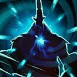
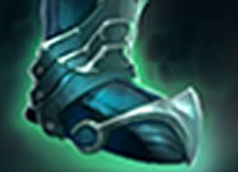

Chat Wheel
This is not for flavor — this is a mandatory bind. It has to be easily accessible.
Emotional Damage is a real thing, as is Emotional Support.

The Chat Wheel is something that I use all the time, so the hotkey has to be good.
After trying out 10+ different variations — I decided F2 is the best.
- Chat Wheel 1: F2
- Chat Wheel 2: F2+Alt
Chat Wheel 1 Setup
Over a decade I figured this is the required setup to play.
I really want these call-outs on hand.

Towards the top I have progressively "aggressive" call-outs.
Towards the bottom I have progressively "defensive" call-outs.
On the left I have "suggestions what to do".
On the right I have "be aware of my perspective".
It's actually crazy how much it makes sense.
Go and Get Back are obvious. Required for any coordination.
Fight Under Tower probably contributes to half of my MMR.
Synergizes perfectly well with every other call-out.
Fight Under Tower is the ultimate "DO NOT DO ANYTHING STUPID".
Prepares the team for action.
Reminds them not to dive.
Reminds them not to chase off your own high-ground.
It's the best.
Treat everyone like they have a 3 second memory.
Spread Out is important for any pre-teamfight action, especially when facing big ultimates such as Black Hole, Reverse Polarity, Chronosphere , etc.
, etc.
Generally useful around objectives, especially high-ground.
When used with Get Back or I'm retreating works as the "Please Disperse" call-out to forfeit an objective, so that everyone is free to push out lanes or get extra farm.
Group Up serves as the "Get Ready" and "Let's Go" call-outs.
It's also useful when you actually want to group up, i.e. for Greaves or Smokes
On my way indicates our intent to join.
It serves as "Wait for me" and "I'm not there yet" at the same time.
I'm retreating indicates our intent not to join.
These are great call-outs, because they lower the chance of our team overextending.
The team needs to know whether they can rely on us to make better decisions.
All miss is a great call-out for "They are smoked", "They are ganking", "Watch the minimap" and "Careful."
Use with Fight under tower, Get back and Group Up to bring your team into safety.